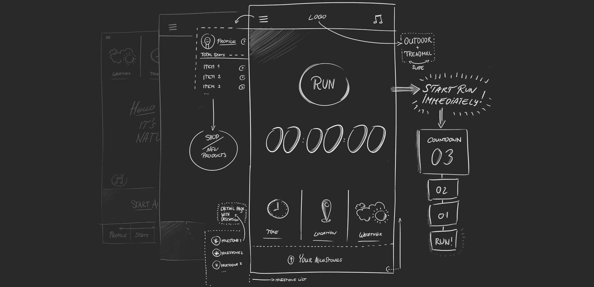
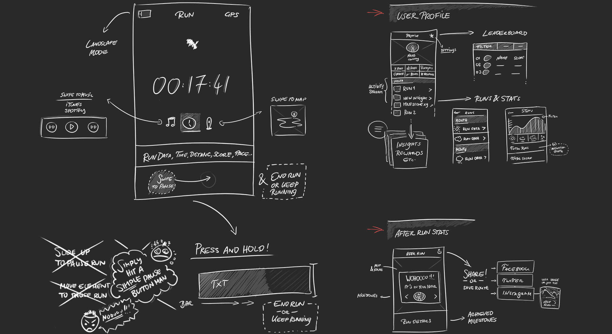
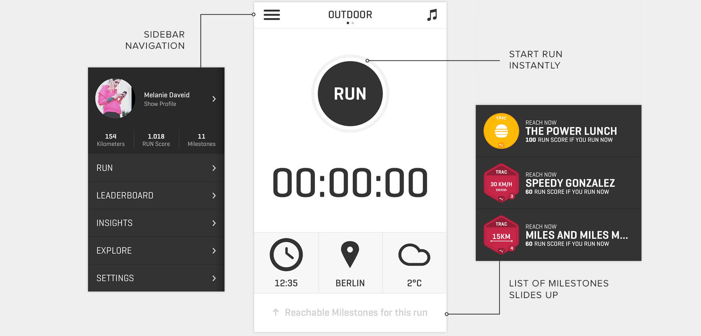
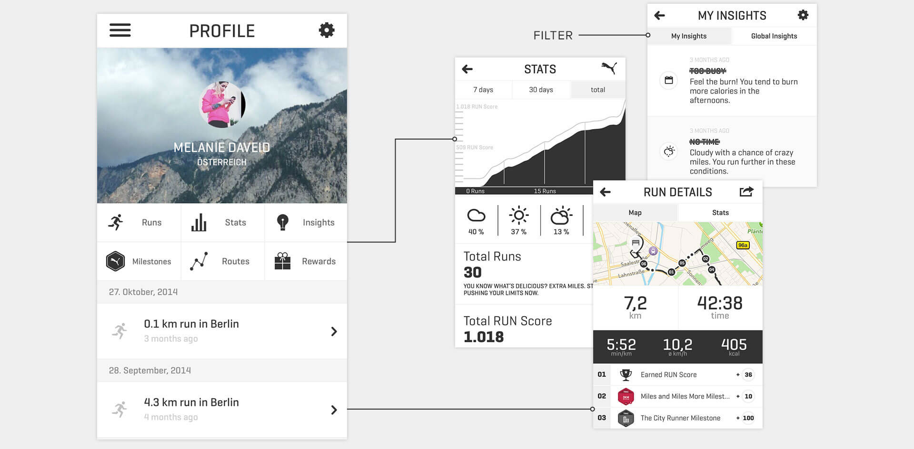
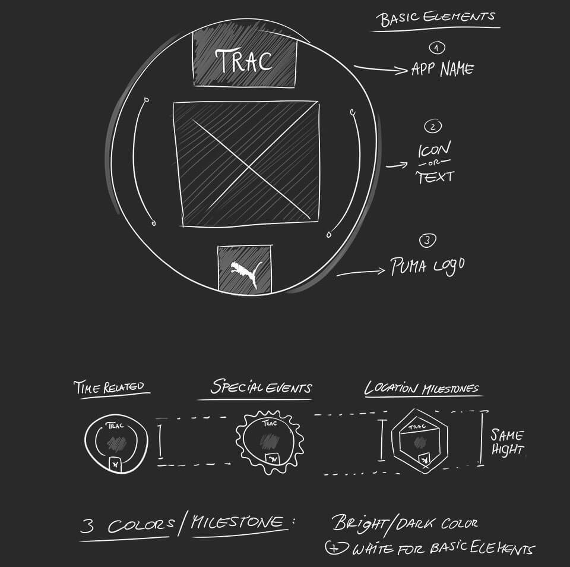
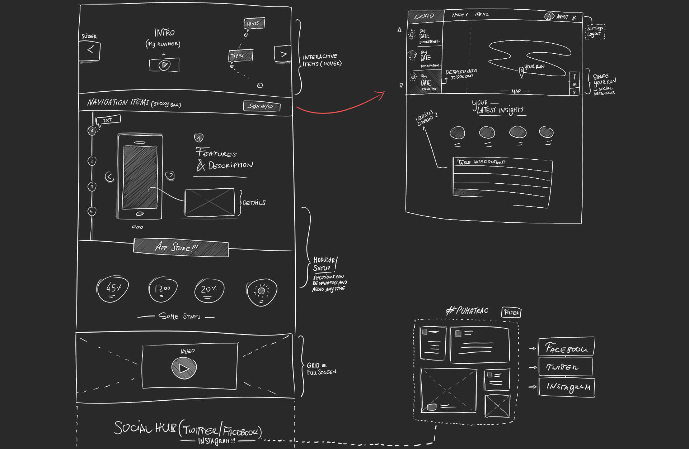
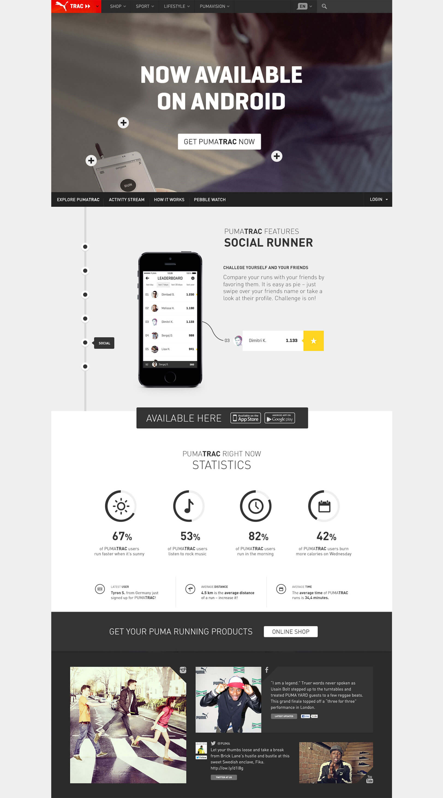

Strategy & Concept
Creating a new running app platform from scratch takes a lot of conceptional groundwork. With PUMA, we went through many steps within a detailed discovery and conception process, analyzing the market, interviewing the target audience, and playing around with different user experience solutions to finally arrive at the perfect approach for PUMATRAC.
One of the most important things while designing and developing the app was the team's complete willingness to create a totally new running experience for the next generation of runners. The design of the app as well as all of the associated platform features reflect its unique approach to running. PUMATRAC is made to inspire people to run, not just track their activity.
Wireframes
IOS APP
Userflow
IOS APP
UI & Interaction
IOS APP
 Milestones
CONCEPT
One core challenge were the PUMATRAC Milestones. Little badges that can be achieved in various situations related to a run. A framework that works for multiple purposes had to be created.
Rough sketches outlined the design process before digitally refiniment.
The Digital Environment
In addition to the PUMATRAC mobile app, the entire digital environment surrounding the app had to be built.
A responsive website to promote the app along with a backend to signup / login and see runs online, a visually appealing content management system for the PUMA team and various social network items were on the list.
The user backend and content management system were done very cleanly whereas the promotional app had much more visual value. Both were designed and built with future features in mind.
Wireframes
WEB APP
UI Design
PROMO PAGE
